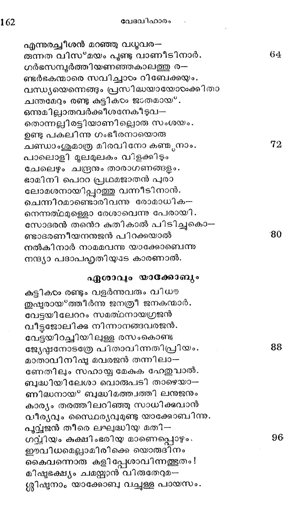

അബ്രഹാമിനന്െറ മുന്നാം വിവാഹം
വൃത്തം---കാകളി
ഇസ്റഹാക്കിന്െറ വിവാഹശേഷം ടദൈവ-
വത്സലനബ്രഹാം മറെറാരു ഭാര്യയേ
സ്വീകരിച്ചാനവരാക്കാഖ്യ കെതുരകാ
തോകങ്ങളണ്ടായവരാക്കു മചിരേണ.
ആയവര്: സിമ്രാന്, യൊകിഷാന്, മെദാനനു--
മായതക്ീര്ത്തി മിദിയാന്, യിഷാബഹന്;
ശൂവഹെന്നിങ്ങനെ യാറുപേരായതിൽല്
ശേബ ദേദാന്മാര്ക്കു താതനായ* യോകിഷാന്
ഭദേദാന്െറ പുത്രരശൂര് , ലെതൂശ*, ലേയുമ്മി,
മീദിയാന് മക്കളേഫാ, എഫേര്, ഹാനകന്,;,
പിന്നീടബീദ, യൊടെല് ദാഗയുമിവര്
വന്നുളരായാര് കെതുൂരാ തനയരായ്.
എങ്കിലുമിസ്്കാക്കിനാണബ്രഹാം തന്െറ
തുംഗസമ്പത്തു കൊടുത്തതിതരരെ
സമ്മാനമേകി സ്വജീവകാലേ തന്നെ
ധര്മ്മാനുരോധമയച്ചാന് മറുദിശി.
നൂറെറഴുപത്തഞ്ചു വത്സരം ജീവിച്ചു
മുററുമായസ്ത്റിലാമുഷ*മീകായോധനേ
വെററിയുമാനന്ദവായ*പ് മുളാകുമെ-
നഅനററവിശ്വാസമോടബ്രാം മരിച്ചിതു.
പൊന്നൊളി ചിന്നിയുദിച്ച കാര്കൊണ്ടലാല്
ഛകരന്നതയെന്നിയേ മൂന്നു ദശകവും
മന്നിതില് നന്നായ" വെളിച്ചം കൊടുത്തുതാ-
നുന്നിയതിന്നൊരു ഭിന്നത യേശാതെ
ധന്യത പൂണ്ടു സശോഭനകാന്തിയില്
വിണ്ണില് നിന്നന്തര് ഹിതനായിടും സൂര്യ-
നെന്തതുപോലി ബ*ഭവനം വെടിഞ്ഞൊരു
സന്നുതനായ* പിതാവിൻ കളേബരം
ഇഷ്മയേലിസ്റ്റാക്കിവര് ചേര്ന്നു മക*പലാ
സുഗ്ദശാനത്തിലടക്കിനാര് ടുഃഖിതര്.
ഇഷഃമയേലിന്െറ വംശപ്പട്ടിക
ഇഷ്*മയേലിനന്െറ തനയര് നെബായോത്തു
എദ*ബയേല്, കേദാര്, മിബശാം, മിശുമയും,
ഭുമാ, മശാ, ഹദാദോട നാഫീശനും
തേമാ, ജരുരും, കെടമായിവരുടെ
നാമാ൯നുസാരം നഗരങ്ങളണ്ടായി
ഭൂമാവെഴുമിവരങ്ങു പ്രഭക്കളായ?
നൂറോടു മുപ്പതു മേഴും വയസ്സി ല-
ശൂരനിഷ*മായേൽ പരേതനാഴയ്ക്കീര്ന്നിതു,
റിബേക്കയുടെ ഗര്ഭധാരണം
താതന് മരിച്ചോരുശേഷം പരേശ്വരൻ
സ്ത്രീതമാ മാശീസ്ത്ു കൊണ്ടിസ്റ്റഹാകനേ
ആതങ്കശൂന്യനാക്കീടിനാനായവന്
വീതസന്ദേഹം വസിച്ചാന് ലഹൈരയിൽല്
കഉദ്വാഹമങ്ങു കഴിഞ്ഞിട്ടിരുപതാ--
ണബ്ുദമെന്നാലും റിബേക്കയാരം ദഹദ--
ആക്തയായ്*ത്തിര്ന്നില്ലതിനാല് സ്വകര്ക്കഭി--
വ്ൃൃക്തമായ്ള്ള വിഷാദമുദിച്ചിതു.
എങ്കിലുമിസ്റ്റാക്കിനുണ്ടായതില്ലൊരു
സങ്കടം സവ്വേശവാഗ്ദാനമോര്ക്കയാൽ.
ഭകോളകൊണ്ടേററമിളകും കടലിലും
ചൂളി ടേണ്ടീ ശോക്തി വിശ്വസിച്ചീടുകില്.
അല്ലമാസങ്ങരം കഴി ഞ്ചഞോരനന്തരം
കെല്ലെഴുമീശക്ടപാലേശ വൈഭവാല്.
ഗര്ഭചിഹ്നങ്ങരം 'ധരിച്ചിതു ഭാമിനി--
യത്ഭുതാവിഷ്ടരായ*ത്തീര്ന്നു ജനങ്ങളം.
കുക്ഷിയില് രണ്ടു ശിശുക്കഠം പരസ്പരം
തിക്കിഞെരുക്കിത്തുടങ്ങിയവരംക്കതാല്.
ഭുഃഖം മുഴുത്തവഠം സവ്വേശ്വരനോടു
തല്*ക്കാരണം വിനവിടുവാന് പോകവേ
ഛണ്ടു വംശത്തിന് പ്രഥമ പരുഷരാ-
കണ്ടിരു കുട്ടികരം നിന്നുടെ ഗര്ഭത്തില്
ജ്യേഷ്ഷന് കനിഷ്കനെ സേവിക്കുമാറതി--
സ്പഷ്ടമാം ഭേദമുളവാമവര് തമ്മില്.
എന്നുരച്ചീശന് മറഞ്ഞു വധുവര-
രുന്നത വിസ*മയം പൂണ്ടു വാണീടി നാർ.
ഗര്ഭസമ്പയര്ത്തിയണഞ്ഞകാലത്തു ൪൦
ണ്ടര്ഭകന്മാരെ സവിച്ചാടം റിബേക്കയും.
വന്ധ്യയെന്നെങ്ങും പ്രസിദ്ധയായോടംക്കിതാ
ചന്തമേറും രണ്ടു കുട്ടികടം ജംതമായ".
ഒന്നുമില്ലാതവര്ക്കീശനേകീടുവ-
തൊന്നല്ിരട്ടിയാണില്ലൊരു സംശയം.
ഉണ്ടു പകലിന്നു ഗംഭീരനായൊരു
ചണ്ഡാംശുമാത്ര മിരവിനോ കണ്മ്യനാം.
പാലൊളി മൂലമുലകം വിളക്കിടും
ചേലെഴും ചന്ദ്രനും താരാഗണങ്ങളം.
ഭാമിനി പെററ പ്രഥമജാതന് പുരാ
ലോമശനായിപ്പുറത്തു വന്നീടിനാന്.
ചെന്നിറമാണ്ടൊരിവന്നു രോമാധിക-
നെന്നത്ഥമുള്ളൊ രേശാവെന്നു പേരായി.
സോദരന് തനെറ കുതികാല് പിടിച്ചുകൊ--
ണ്ടാദരണീയനനുജന് പിറക്കയാല്
നല്കി നാർ നാമമവന്നു യാക്കോബെന്നു
നന്ദ്യാ പദാപഹൃതിയുടേ കാരണാല്.
ഏശാവ്യം യാക്കോബ്യം
കുട്ടികടം രണ്ടും വളര്ന്നുവരും വിധ
തുഷ്ടരായ*ത്തീര്ന്നു ജനത്രീ ജനകന്മാര്.
വേട്ടയിലേററം സമത്ഥനായഗ്രജന്
വീട്ടജോലിക്കു നിന്നാനങ്ങവരജന്.
വേട്ടയിറച്ചിയിലുള്ള രസംകൊണ്ടു
ജ്യേഷ്ഷഠനോടത്രേ പിതാവിന്നതിപ്രീയം.
മാതാവിനിഷ്യ മവരജന് തന്നിലാ-
ണേതിലും സഹായ്യ മേകുക ഹേതുവാല്.
ബുദ്ധിയിലേശാ വൊരുപടി താഴെയാ-
ണിദ്ധനായ* ബദ്ധിമത്ത്വത്തി ലനുജനും
കാര്യം തരത്തിലറിഞ്ഞു സാധിക്കുവാൻ
വീര്യവും സ്വൈര്യവുമുണ്ടു യാക്കോബിന്നു.
പുവ്വജന് തീരെ ലഘദ്ധിയ മതി--
ഗവ്വിയം കുക്ഷിംഭരിയ മാണെപ്പൊഴും.
ഈവിധമെല്ലവാമിരിക്കെ യൊരുദിനം
കൈവന്നൊരു കളിപ്പേശാവിന്നത്ഭുതം !
മിഷ്ടഭക്ഷ്യം ചമയ്ക്കാന് വിരുതേറുമ--
ശ്ലിീഷ്ടനാം യാക്കോബ വച്ചുള്ള പായസം.

പേട്ടു പോയിത്തിരിച്ചുവരും വിധയ
ജ്യേഷ്മനാ മേശാവുകണ്ടു കനിഷ്ടനേ
മുട്ടിച്ച ചോദിച്ചു സ്വല്മതില്നിന്നു
കിട്ടിക്കണം തനിക്കെന്നതിന്നുത്തരം
പെട്ടെന്നു നലകി യാക്കോബന് വിലയുള്ള
ചെട്ടാണിതൊട്ടം വെറുതേ തരില്ല ഞാന്.
ഏശാവുരചെയ്തു ചൊല*ക യെന്നാല്വില-
യേതാകിലും വേണമിപ്പായസം മമ.
ആഖേടനത്തിന്നു പോയി വരുന്നു ഞാ-
നാകയാല് ക്ഷീണത ചില്ലറയല്ലെടോ.
ദാഹവും സ്വാഭാവികമായിതിലള്ള
മോഹവും പൃവ്വാധികം വളരുന്നുമേ.
യാക്കോബു ചൊല്ലിനാൻ: നന്നുനിന് ഭാഷണം
വ്യാക്കമുണ്ടിപ്പായസത്തില് നിനക്കെങ്കില്
ന്യായവഴിക്കു നിനക്കു വരേണ്ടതാം
ഭായ മിരടിയാണല്ലോ പിതൃസ്വത്തില്.
അപ്പൈത്ുകത്തിന്െറ ജ്യേഷ്ഠാവകാശമി --
ന്നെപ്പേരുമേക്! തരാം തവ പായസം.
ചൊല്പിനാനഗ്രജന്: ജ്യേഷ്ഠദായത്തി നാ--
ലില്ലൊരു നന്മയിനിക്ക്, ഞാനിക്ഷണം
ചാകുമാറുള്ള ശരീര സാദാഗ്നിയില്
വേക മുടലോടിരിക്കുന്നു സാമ്പ്രതം.
ആയതുകാരണം പായസംമംതന്നു നീ
ഭായം പരിഗ്രഹിച്ചീടുകവരജ!
ഇത്ഥമാകര്ണുൃയ കൊടുത്തിതു പായസം
സത്യവും ചെയ്തിതേശാവു സോത്സാഹനായ്.
കുക്ഷിംഭരികഠം വയററിനു കിട്ടുകി--
ലക്ഷികടംകൂടെ ച്ചുഴന്നു കൊടുത്തിടും
മത്സ്യമിരയെ കൊതിക്ക കൊണ്ടല്ലയോ
ചുിത്ുഖം പൂണ്ടു ബളിശത്തിലാവതും.
ഏവം ചവന്ന പയര്പായസം ഭൂജി-
ച്ചേദോമിതിനാമ മേശാവ പ്രാപിച്ചു.
ഭൂവി ലേശാവിനന്െറ ജ്യേപ്മഷാനുജര് പല-൦
രാവസിക്കുന്നുണ്ടിതേ സാഭാവത്തൊടും.